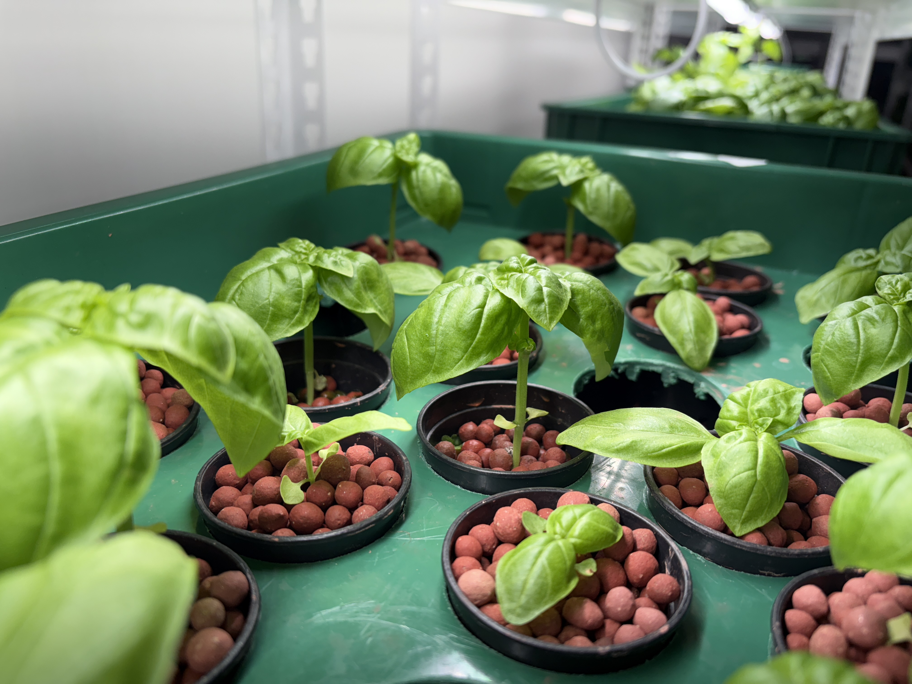
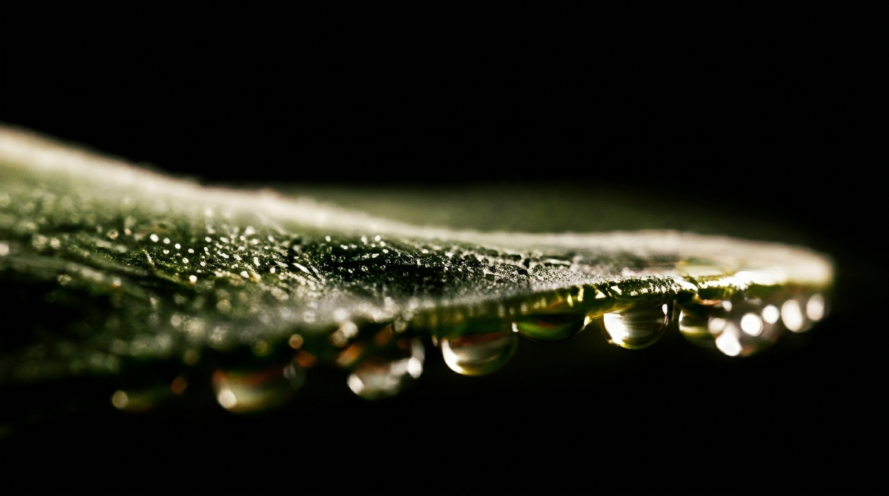

001
우리는 바질을 단순히 재배하지 않습니다.
향과 잎의 밀도, 그리고 식물의 본질적인
컨디션까지 생각하며 더 정교한 방식으로
바질을 키워냅니다.
Grown with intention, felt with every sense
The leaf remembers how it was raised
This is what basil was always meant to be
우리는 바질을 단순한 식재료로 보지 않습니다.
실내 스마트팜의 안정된 환경 안에서
향과 잎의 상태를 세심하게 설계하고,
그 결과가 한 장의 잎에 고스란히 담기도록
재배의 모든 과정을 직접 관리합니다.
좋은 바질은 보기 전에 향으로 먼저 알 수 있어야 합니다.
황토볼 기반 수경 재배로 균형 있게 자란 우리의 바질은
가까이 갈수록 선명해지는 형기와
손끝으로 느껴지는 탄탄한 잎의 두께로
그 차이를 직접 말해줍니다.
빠르게 키우는 방식 대신 더 좋은 상태로
자랄 수 있는 환경을 선택했습니다.
바질의 품격은 재배를 대하는 태도에서
이미 결정된다고 믿기 때문입니다.

외부 환경의 급격한 변화에 흔들리지 않도록 생육에 필요한 조건을 안정적으로 관리하며, 보다 일정하고 건강한 상태의 바질을 키워냅니다.
황토볼을 활용한 수경 재배 방식을 적용해 식물이 자라는 기반 환경을 세심하게 설계합니다. 바질의 향과 잎의 상태를 균형 있게 유지하는 데 도움을 줍니다.
FRESHGRAM이 지향하는 품질 기준을 꾸준히 이어갈 수 있도록 재배 방식과 환경을 함께 설계합니다.

가까이 갈수록 더 선명하게 느껴지는 향은
이 바질이 가진 본연의 매력을 분명하게 보여줍니다.
깊은 향은 우리의 가장 큰 특징 중 하나입니다.

눈으로 보이는 신선함을 넘어, 손끝으로 느껴지는 탄탄한 밀도는 우리가 추구하는 재배 품질의 결과입니다.

풍부한 칼슘을 고려한 균형 있는 생육 관리로
바질이 더욱 건강하고 안정적으로 자랄 수 있도록 돕습니다.
재배 환경과 방식, 품질 기준이 함께 만들어낸 결과입니다.

한 번 보면 보이고, 한 번 맡으면 기억됩니다.
잎에서 시작된 향은
형태를 바꿔도 그 본질을 잃지 않습니다.
우리는 그 연속성을 제품으로 만들었습니다.
온도, 습도, 양액 하나하나를 직접 설계하며 실내 스마트팜에서 바질 본연의 향과 잎의 상태를 세심하게 끌어올렸습니다.
수확한 바질은 서두르지 않습니다. 자연 건조의 시간을 충분히 거치며 생잎이 품은 향의 인상을 천천히, 그리고 깊이 농축합니다.
믿을 수 있는 천연 원료만을 사용해 한 번에 소량씩, 직접 손으로 만들어냅니다. FRESHGRAM의 기준은 완성된 제품 한 개에도 그대로 담겨 있습니다.
신선한 잎에서 시작된 향은 공간 속으로 스며들어 오래 머뭅니다. 바질이 가진 감각을 일상의 장면으로 확장하는 경험을 제공합니다.
한 장의 잎에서 시작된 차이는 브랜드 전체의 인상으로 이어집니다.
우리가 만드는 것은 단순한 농산물이 아니라,
더 좋은 방식으로 자란 식재료이자 더 오래 기억되는 향의 경험입니다.